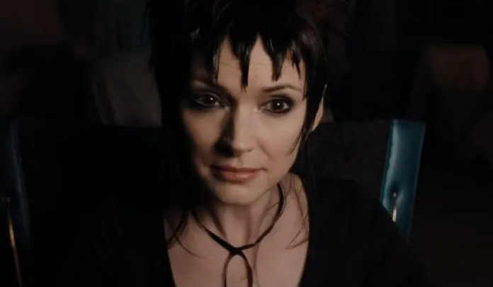
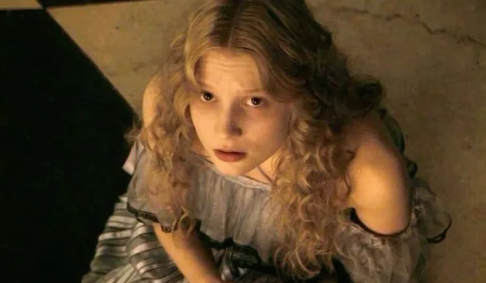
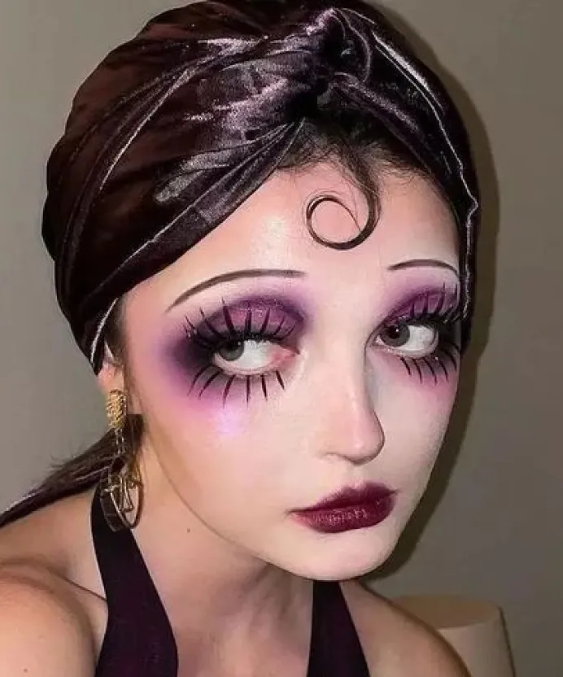

Tim Burton: Pioneer of virtual make-up in cinema
Tim Burton's singular aesthetic prefigured the era of virtual make-up, transforming our perception of beauty in cinema.
By Alice Frelin - Reading Time : 2min
Published on October 21, 2024 at 10:30 pm
Freepik.fr
A visionary aesthetic
Tim Burton, iconic director known for his gothic fantasy aesthetic, has long been in avant-garde cinematic make-up excentric.
Today, at the dawn of the virtual make-up era, his work is taking on a new dimension, emerging as a visionary forerunner of the digital transformation of beauty.
Photogram from Beetlejuice - Burton (2024)
A lasting influence
Burton's iconic characters, with their oversized eyes, pale complexions and their exaggerated features, almost look like they've stepped out of a modern augmented reality filter
Movies like Edward Scissorhands or Alice in Wonderland present looks that were once considered fantastic, but are now achievable in just a few clicks thanks to virtual make-up technologies.
Photogram from Alice in Wonderland - Burton (2010)
Burton's approach to make-up has always been pushed the limits of the possible, unwittingly anticipating the era when the instant virtual transformation would become a reality
His creations, which in the past required hours of painstaking work with prosthesis and traditional make-up, can now be reproduced in real time thanks to augmented reality.
Burton's distinctive style, characterized by sharp contrasts and accentuated features, resonates with today's popular filters. Its unique aesthetic has influenced a whole generation of digital content creators, who draw inspiration from his characters to create filters or captivating looks.
Make-up inspired by the world of Tim Burton :
@intohercoffin sur Tikok©
In the current context of virtual make-up, Burton's work can be seen as a form of "prehistory of the future".
His eccentric visions, once considered pure fantasy, have become tangible inspirations for virtual makeup designers and AR filter users alike.
A tiktok filter inspired by the world of Tim Burton :

@a_personn_i_think sur Tiktok©
As we enter an era where physical make-up could become obsolete, replaced by more versatile and eco-friendly virtual alternatives, Burton's make-up legacy takes a new meaning.
His work reminds us that imagination and creativity remain at the heart of personal expression, whether through traditional techniques or cutting-edge technologies.
Tim Burton, with his unique style and avant-gardist, has not only left its mark on the history of cinema, but has also, without realizing it, paved the way for a new kind of a revolution in the world of virtual make-up. Her influence continues to be felt, inspiring innovation who are shaping the future of digital beauty.